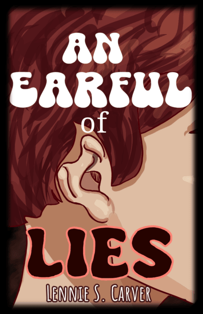

About Me
My name is Lennie Lee Carver! I've written a couple of books because I have a strong love for writing and creating stuff, which is a reason why I want to make websites and learn to code. My main inspirations are Undertale by Toby Fox and Gravity Falls by Alex Hircsh.
My first book
While I got sucked into depression and darkness, I found myself roleplaying with AI characters so much that I nearly didn't have enough time to do my homework. But, as time went on, I found that I wanted things to go differently... so I ended up writing it the way I wanted it to go. And then I kept writing. And before I knew it, I had written an entire book! And people liked it enough... and now it's published!